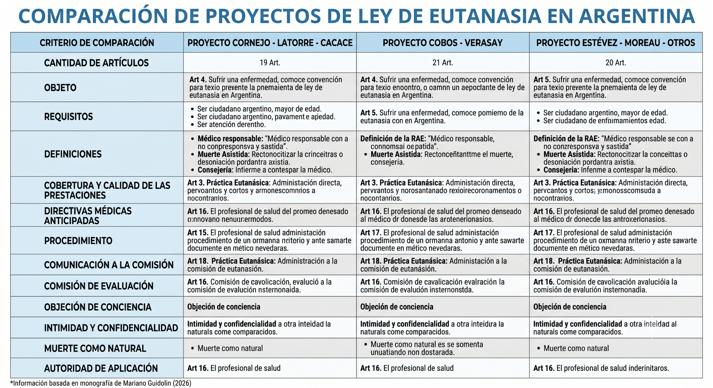

Mi paso por las Prácticas Profesionales en Territorio
Mi nombre es Mariano Guidolin. Realicé las Prácticas Profesionales en Territorio (en adelante PPT) en mi actual trabajo como asesor legislativo. Decidí encauzar esta propuesta de Práctica Profesional Supervisada VIII en el ámbito de lo público porque es una de las cosas que me gustaría hacer cuando sea abogado. En todo ese tiempo logré aprender y enriquecerme de conocimientos prácticos y teóricos que no se encuentran en el plan de estudio de la carrera por su especificidad.
Fue una experiencia fructífera en la cual debido a la participación activa en varios de los temas que trabajamos, específicamente en el proyecto de ley de eutanasia es que hoy en día formo parte de una red de asistencia y asesoramiento en eutanasia como también soy parte fundante de la campaña nacional por el derecho a la eutanasia.
Definición de la eutanasia y sus distintas formas
La eutanasia es un término que se utiliza para describir la acción de poner fin a la vida de una persona de manera deliberada y con su consentimiento, con el propósito de aliviar el sufrimiento insoportable causado por una enfermedad terminal, una discapacidad grave o una condición médica que provoca un sufrimiento extremo.
Definición de la RAE:
f. Intervención deliberada para poner fin a la vida de un paciente sin perspectiva de cura.
f. Med. Muerte sin sufrimiento físico.
También podemos receptar distintos tipos de eutanasia en base a los siguientes criterios:
Acción
- Eutanasia activa: La eutanasia activa implica una acción deliberada para causar la muerte de un paciente. Esto puede incluir la administración de una sustancia letal, como un medicamento letal, que provoca la muerte de manera rápida y sin dolor.
- Eutanasia pasiva: La eutanasia pasiva se refiere a la omisión de tratamientos médicos o procedimientos que podrían prolongar la vida de un paciente. Por ejemplo, retirar el soporte vital, como la ventilación asistida o la alimentación artificial, con el conocimiento de que esto llevará a la muerte del paciente.
Voluntad
- Eutanasia voluntaria: La eutanasia voluntaria implica que el paciente solicita y da su consentimiento para poner fin a su vida. Este tipo de eutanasia se lleva a cabo con la participación activa de un profesional de la salud y con el consentimiento pleno y libre del paciente.
- Eutanasia no voluntaria: La eutanasia no voluntaria se produce cuando un paciente no está en condiciones de dar su consentimiento, generalmente debido a una incapacidad, discapacidad o falta de capacidad de toma de decisiones. En estos casos, la decisión de poner fin a la vida del paciente se toma a menudo por parte de familiares o profesionales de la salud.
Otros tipos de eutanasia
- Eutanasia asistida: La eutanasia asistida es un tipo en el que un profesional de la salud proporciona los medios o la sustancia para que el paciente termine su propia vida. El paciente realiza el acto final de administración de la sustancia letal.
- Eutanasia doble: La eutanasia doble implica la administración de sustancias que tienen la intención de aliviar el sufrimiento del paciente, pero que también tienen el efecto secundario de acortar su vida. Es un área éticamente compleja, ya que la intención original es aliviar el sufrimiento, pero la muerte es un resultado previsible.
Orígenes de la eutanasia y su práctica a lo largo de la historia
La eutanasia es un tema con una larga historia que abarca diferentes culturas y épocas. Aquí se presentan los orígenes de la eutanasia y su práctica a lo largo de la historia:
Etapa primitiva
Datos históricos revelan que entre algunos pueblos primitivos se acostumbraba a matar o abandonar a los ancianos y a las personas muy enfermas. Se cuenta que entre los esquimales se practicaba una especie de eutanasia voluntaria, pues a petición del anciano o del enfermo se les abandonaba tres días en un iglú herméticamente sellado.
Etapa antigua
Entre algunos pueblos, como entre los celtas, el designio eugénico se completaba con el propósito eutanásico, puesto que se le daba muerte a los ancianos valetudinarios. La práctica extendida entre algunas tribus antiguas y grupos salvajes imponía como obligación sagrada al hijo administrar la muerte buena al padre viejo y enfermo.
Pueblo griego
Dentro de las ciudades griegas como en Atenas, el Estado tenía por costumbre suministrar el veneno –la cicuta– a quienes lo solicitaban explitamente para poner fin a sus sufrimientos.
Según la historia, grandes pensadores de Grecia y Roma practicaron el suicidio eutanásico. Se cuenta que el filósofo griego Diógenes se suicidó cuando cayó gravemente enfermo; de igual manera, Zenón de Sitio, fundador de la escuela estoica, y Epicúreo de quien se dice, no llegó a suicidarse, pero se embriagó para no tener conciencia de su muerte.
Es oportuno señalar que la cultura griega siempre estuvo regida por el autogobierno y que en la misma se acuñan diferentes ejemplos de eutanasia entendida como correcto morir.
Pueblo romano
En Roma, similar a lo que acontecía en el pueblo griego, existía un depósito de cicuta a disposición de quien mostrase ante la corte deseos de abandonar la vida. Por otro lado, la eutanasia neonatal estaba autorizada legalmente en Roma a través de la Ley de las XII Tablas donde el padre podía matar al nacer, a los hijos gravemente deformes.
Etapa medieval
Durante la Edad Media se habló sólo de matar por misericordia a los que caían gravemente heridos en el campo de batalla. Las guerras, pestes y epidemias acontecidas inspiraron a causa del espíritu religioso, el arte de bien morir. Sin embargo, para los cristianos medievales la idea de matar por compasión resultaba repugnante, pues admitían que el dolor venía de Dios y debía ser aceptado como expresión de voluntad del Todopoderoso.
Etapa moderna
Tras su conformación, el derecho público europeo contó con un ingrediente filosófico fundamental, consistente en los principios de moral práctica devenidos de la religión católica.
En resumen, la eutanasia tiene una larga historia que abarca diferentes períodos y culturas. Ha evolucionado desde ser vista como una muerte compasiva en la antigua Grecia hasta ser un tema ético, legal y médico debatido en la actualidad. La percepción y la práctica de la eutanasia varían en todo el mundo y están influenciadas por una serie de factores culturales, religiosos y éticos.
El papel de la religión en la percepción de la eutanasia
La religión juega un papel significativo en la percepción de la eutanasia, ya que las creencias religiosas a menudo influyen en cómo las personas y las comunidades ven esta práctica.
Oposición religiosa a la eutanasia
- Cristianismo: Es generalmente vista como inmoral, ya que se considera que viola el mandamiento "No matarás" y la creencia en la sacralidad de la vida. La Iglesia Católica, en particular, se opone férreamente a la eutanasia en todas sus formas.
- Islam: En el islam, la mayoría de las interpretaciones también prohíben la eutanasia, ya que se considera un acto de tomar la vida de otro ser humano, lo cual es inaceptable desde una perspectiva religiosa.
- Judaísmo: Las opiniones judías sobre la eutanasia pueden variar según la denominación y la interpretación de la ley judía. Sin embargo, muchas corrientes ortodoxas judías tienden a oponerse a la eutanasia, considerándola contraria a la ética y la ley judía.
Aceptación religiosa de la eutanasia
- Budismo: Algunos budistas pueden apoyarla en situaciones de sufrimiento extremo, siempre que sea la elección del paciente y se realice con compasión.
Impacto en la legislación
En muchos países, las opiniones religiosas influyen en la legislación relacionada con la eutanasia como lo es el caso de Brasil y Argentina donde la iglesia ocupa aun un papel preponderante en legislaciones de este tipo. A menudo, las creencias religiosas influyen en si una persona o una comunidad ve la eutanasia como moral o inmoral. En sociedades pluralistas, el diálogo interreligioso y el respeto por la autonomía del paciente pueden llevar a una mayor comprensión de la eutanasia.
Discusión sobre los principios éticos que rodean la eutanasia, incluyendo la autonomía, la beneficencia, la no maleficencia y la justicia
El análisis de los principios éticos que rodean la eutanasia, particularmente la autonomía del paciente y el principio de no maleficencia, es esencial para comprender los argumentos a favor y en contra de esta práctica.
Autonomía del Paciente
La autonomía del paciente es un principio ético fundamental en la toma de decisiones médicas. Se basa en el respeto por la capacidad de los individuos para tomar decisiones informadas y autónomas sobre su propia atención médica. En el contexto de la eutanasia, la autonomía del paciente se manifiesta de la siguiente manera:
- Derecho a decidir: Los defensores de la eutanasia argumentan que las personas que enfrentan enfermedades terminales o sufrimientos insoportables deben tener el derecho de tomar decisiones informadas sobre el momento y la forma en que desean poner fin a su vida. La autonomía les permite ejercer control sobre su destino y reducir su sufrimiento.
- Consentimiento informado: La práctica de la eutanasia requiere un consentimiento informado del paciente. Esto implica que el paciente esté completamente informado sobre las opciones disponibles, los riesgos y beneficios, y tome una decisión libre de influencias indebidas. La autonomía del paciente garantiza que la elección sea verdaderamente voluntaria.
- Evaluación de la calidad de vida: La autonomía también implica que las personas tengan el derecho de evaluar su propia calidad de vida y decidir si su situación es inaceptable. Si un paciente considera que su vida no es digna de ser vivida debido al sufrimiento o la pérdida de autonomía, se argumenta que la eutanasia respeta su autonomía al permitirles tomar una decisión basada en sus propios valores y perspectivas.
Principio de No Maleficencia
El principio de no maleficencia es otro pilar fundamental de la ética médica. Se refiere a la obligación de los profesionales de la salud de no causar daño a los pacientes y de actuar en su mejor interés. En el contexto de la eutanasia, este principio se interpreta de la siguiente manera:
- Evitar el sufrimiento innecesario: Los defensores de la eutanasia argumentan que esta práctica puede ser un acto de no maleficencia al evitar un sufrimiento innecesario. En situaciones de enfermedad terminal o sufrimientos insoportables, prolongar la vida del paciente puede aumentar su dolor y angustia. En este sentido, la eutanasia se ve como una forma de poner fin al sufrimiento del paciente, lo que se considera un acto de bondad y compasión.
- Equilibrio de principios éticos: Sin embargo, la eutanasia también plantea un dilema ético, ya que se encuentra en un delicado equilibrio entre la autonomía del paciente y el principio de no maleficencia. Al permitir la eutanasia, se puede evitar un sufrimiento innecesario, pero también se corre el riesgo de crear un precedente peligroso que podría poner en peligro la vida de personas vulnerables o dar lugar a decisiones apresuradas.
El análisis de estos principios éticos demuestra que la eutanasia es un tema complejo que involucra una ponderación cuidadosa.
Los argumentos éticos a favor de la eutanasia enfatizan la importancia de permitir que los individuos tomen decisiones sobre su propia vida y muerte, mientras que los opositores resaltan el riesgo de abuso y la importancia de preservar la vida a toda costa.
Casos y dilemas éticos relacionados con la eutanasia
Existen varios casos relacionados con la eutanasia que ilustran su complejidad. A continuación algunos ejemplos:
Caso de Brittany Maynard
Brittany Maynard, una joven estadounidense, fue diagnosticada con un glioblastoma, un cáncer cerebral terminal. Decidió trasladarse a Oregón, donde la eutanasia asistida por médicos es legal, para poner fin a su vida.
Este caso planteó preguntas sobre la autonomía del paciente, el alivio del sufrimiento y el papel de la eutanasia en situaciones de enfermedad terminal. Su elección de poner fin a su vida generó un debate sobre si debería ser un derecho universal.
Caso de Terri Schiavo
Terri Schiavo fue una mujer estadounidense en estado vegetativo persistente durante 15 años. Su esposo deseaba retirar su alimentación e hidratación artificial, argumentando que ella hubiera deseado morir.
Este caso planteó preguntas sobre el consentimiento previo y la calidad de vida. La decisión de retirar el soporte vital de una persona en estado vegetativo generó un intenso debate ético y legal.
Caso de Vicente Humbert
Vincent Humbert, un francés tetrapléjico y ciego, solicitó la eutanasia en Francia, donde era ilegal. Su madre finalmente ayudó a poner fin a su vida.
Este caso plantea preguntas sobre la compasión y el papel de los familiares en las decisiones de eutanasia, así como sobre las leyes que prohíben la eutanasia. ¿Fue ético el papel de la madre en la muerte de Vincent?
Comparación de algunos de los proyectos presentados en Argentina

Ética y responsabilidad médica en la administración de la eutanasia
La ética y la responsabilidad médica en la administración de la eutanasia son temas fundamentales en el debate sobre esta práctica. Los profesionales de la salud enfrentan desafíos éticos significativos al considerar la eutanasia como una opción y deben cumplir con altos estándares de ética médica. A continuación, se exploran los aspectos éticos y las responsabilidades del médico personal en la administración de la eutanasia:
Ética en la toma de decisiones
- Consentimiento informado: Antes de llevar a cabo la eutanasia, los médicos deben asegurarse de que el paciente haya proporcionado un consentimiento informado, lo que significa que el paciente debe estar completamente informado sobre los procedimientos, riesgos y alternativas disponibles. Esto respeta el principio ético de autonomía del paciente.
- Evaluación de la calidad de vida: Los médicos deben evaluar si la calidad de vida del paciente es inaceptable debido a su enfermedad o sufrimiento. Esto implica un juicio ético sobre la base del sufrimiento del paciente y sus valores personales.
- Evaluación de la irremediabilidad: Los médicos deben determinar que la situación del paciente es irremediable y que los tratamientos médicos convencionales ya no pueden proporcionar alivio o mejorar la calidad de vida del paciente.
Responsabilidad médica
- Cumplimiento de las leyes y regulaciones: Los médicos deben cumplir con las leyes y regulaciones locales que rigen la eutanasia, si es legal en su jurisdicción. Esto incluye la notificación de casos de eutanasia y la documentación adecuada.
- Ética y profesionalismo: Los médicos tienen la responsabilidad de ejercer su juicio ético y profesional en la administración de la eutanasia. Esto incluye la evaluación cuidadosa de cada caso, el respeto por la autonomía del paciente y la garantía de que la eutanasia se realice de manera compasiva y digna.
- Objeción de conciencia: Algunos médicos pueden tener objeciones éticas o religiosas a la eutanasia. Tienen derecho a objetar y negarse a participar en la eutanasia, pero también tienen la responsabilidad de remitir al paciente a otro profesional de la salud dispuesto a brindar la atención requerida.
Comunicación y apoyo
- Comunicación con el paciente y la familia: La comunicación abierta y comprensiva es esencial. Los médicos deben discutir los riesgos y beneficios de la eutanasia con el paciente y su familia y brindar apoyo emocional.
- Derivación a servicios de apoyo: Los profesionales de la salud deben proporcionar información sobre servicios de apoyo, como cuidado paliativo y atención psicológica, para garantizar que los pacientes tengan acceso a todas las opciones disponibles.
- Acompañamiento y dignidad: En la administración de la eutanasia, los médicos deben asegurarse de que el proceso se realice de manera digna y compasiva, evitando el sufrimiento innecesario y respetando la integridad y la autonomía del paciente.
La administración de la eutanasia plantea cuestiones éticas complejas para los médicos, que deben equilibrar la autonomía del paciente, el alivio del sufrimiento y el cumplimiento de sus responsabilidades profesionales. La ética y la responsabilidad médica desempeñan un papel esencial en el debate sobre la eutanasia y en la toma de decisiones individuales de los profesionales de la salud.
Conclusión
La legalización de la eutanasia y el suicidio médicamente asistido no solamente es compatible con una concepción humanista de la profesión médica, sino que posee una fuerte base constitucional, convencional y de derechos humanos. De hecho, ha habido pronunciamientos sobre la inconstitucionalidad de prohibir algunas de estas prácticas por parte de tribunales supremos o constitucionales de diversos países, entre ellos Canadá, Perú, Colombia y Alemania. En nuestro país, esta base constitucional y convencional es especialmente sólida. En efecto, el artículo 19 de nuestra Carta Magna declara su compromiso con la autonomía de las personas, en la medida en que sus decisiones pertenezcan a su moral o ámbito privado y no perjudiquen a terceros. Tanto la eutanasia como el suicidio médicamente asistido son decisiones que las personas toman sobre la base de sus valores y su concepción de lo que es una buena vida o una vida digna. Son, por lo tanto, parte de su moral privada y no deberían ser restringidas por el estado. Sólo podrían ser reguladas con el objetivo de garantizar que dichas decisiones sean tomadas con voluntad genuina, exenta de presiones, y en un contexto de contención y cuidado.
Referencia bibliográfica
Consideraciones acerca de la Eutanasia. Lic. J. Federico Campos Calderón, Lic. Carlos Sánchez Escobar, Licda. Omaira Jaramillo Lezcano.
Videoconferencia: "Eutanasia - Legislación y procesos de legalización en otros países", Colegio público de la abogacía de capital federal.
Dinah Magnante, “Bioética Clínica Toma de Decisiones: Final de la vida”. Legislación internacional. 2a Ed. 2021.
Carmen Velasco Bernal, José María Trejo-Gabriel-Galán, “Leyes de eutanasia en España y en el mundo: aspectos médicos”. 2021.
Eleonora Lamm, Graciela Jacob y Marisa Aizenberg, RIOSP “Cuidados, derechos y decisiones en el fin de la vida”.
Proyectos de ley: PROYECTO CORNEJO - LATORRE - CACACE.
Proyectos de ley: PROYECTO COBOS - VERASAY.
Proyectos de ley: PROYECTO ESTÉVEZ - MOREAU - OTROS.